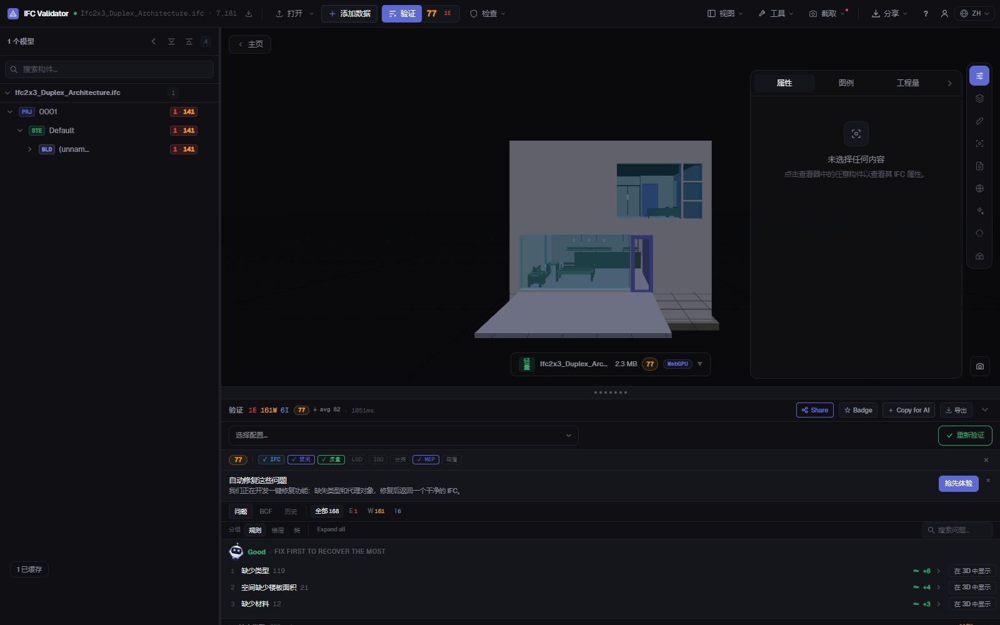
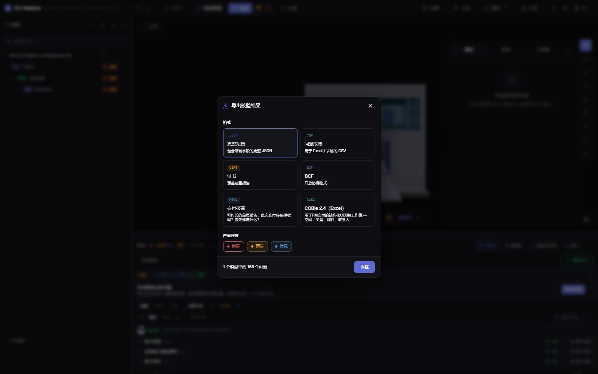

IFC 模型健康检查
30 秒得到评分和报告
拖入 IFC，即可按 44 条质量规则（GUID、空间结构、类型、材料、属性集、坐标）得到 0–100 的 Health Score，并优先列出扣分最多的三个问题。之后可导出可打印的交付报告、证书、BCF 或 COBie。
运行健康检查 — 免费 →无需账号 · 不上传任何内容 · 在浏览器中运行 · 免费

功能
可以直接交付的健康检查
给业主一个分数，给作者完整清单，给 CDE 留下证据。
Health Score 0–100
按严重程度加权的模型数据质量评分，并提供行业平均值对比。
优先修复
扣分最多的规则及可挽回的分数，并可一键在 3D 中显示相关构件。
44 条规则 + IDS
GUID、空间层级、孤立构件、类型、材料、属性集、单位、坐标、碰撞，以及任何 buildingSMART IDS 文件。
可打印的交付报告
一页 HTML 报告（该交付是否会被退回、需要修复什么），可在浏览器中打印或另存为 PDF。
证书、BCF、COBie
覆盖范围证书、供作者使用的 BCF 2.1 问题、CSV/JSON 以及 COBie 2.4 工作簿。
不上传
检查通过 WebAssembly 在浏览器中运行，适用于保密项目、离线环境和任何电脑。
截图

常见问题
常见问题
什么是 IFC 模型健康检查？
对 IFC 文件数据质量的自动审查：结构、标识符、分类、属性和坐标。IFC Viewer Online 将其汇总为 0–100 的 Health Score，并列出每个问题及对应构件。
可以得到 PDF 报告吗？
可以。导出“交付报告”：一页可打印的 HTML 报告，包含评分、问题数量和优先修复项。打开后在浏览器中打印或“另存为 PDF”。另有 JSON 证书、CSV、BCF 和 COBie。
检查前必须上传 IFC 模型吗？
不需要。与需要上传的检查服务不同，文件在浏览器中打开并检查，从不发送到服务器。
多少分算好？
90–100 可直接交付，75–89 可用于协调但需小幅修正，50–74 需在交付前处理，低于 50 存在严重数据问题。
免费吗？
免费，任何用途包括商业项目都可使用，无需账号，也没有按文件大小收费。